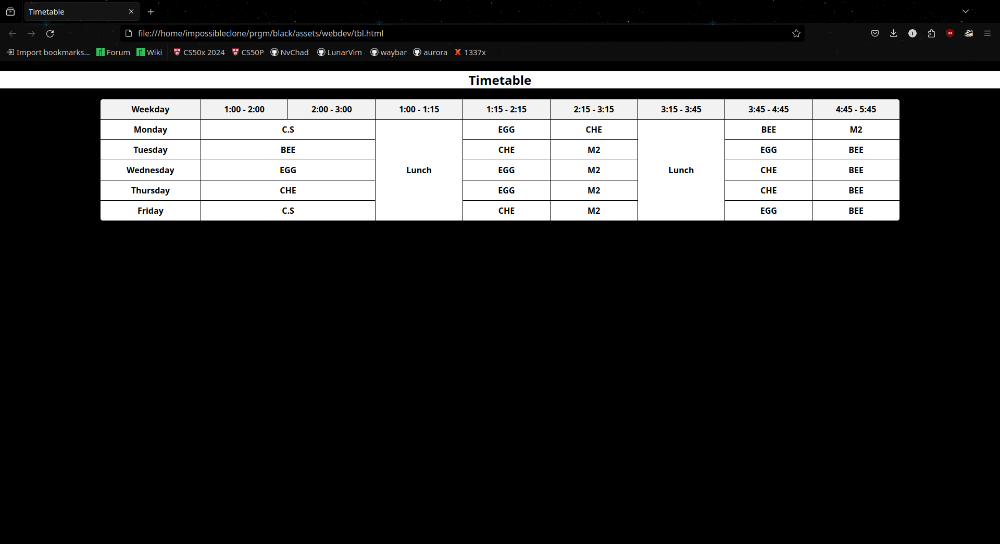
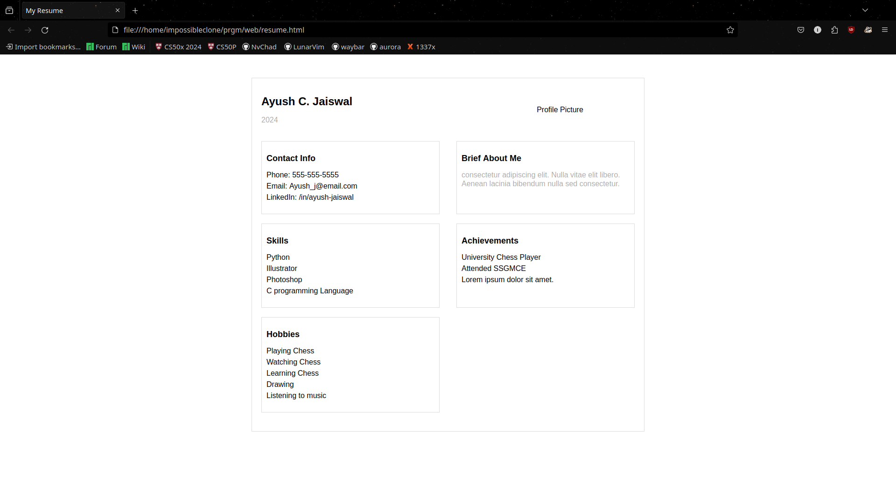
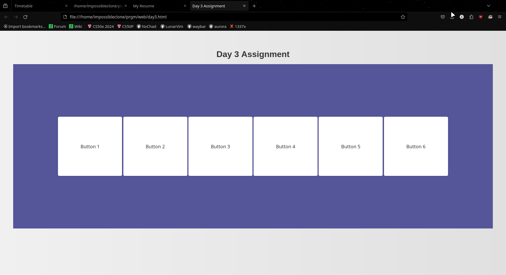
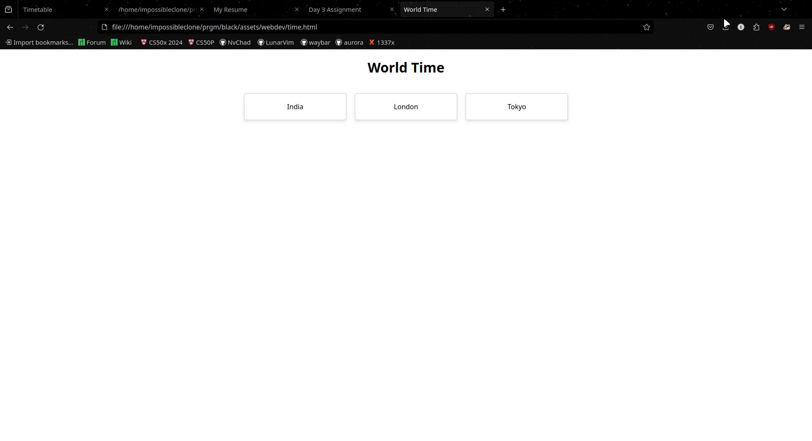
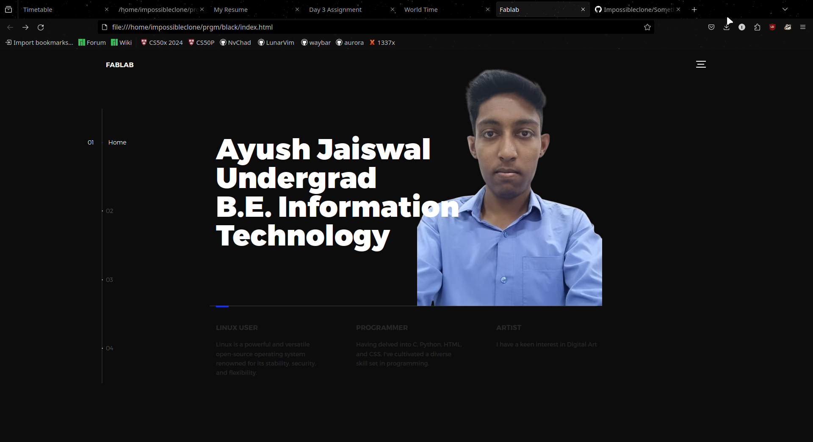
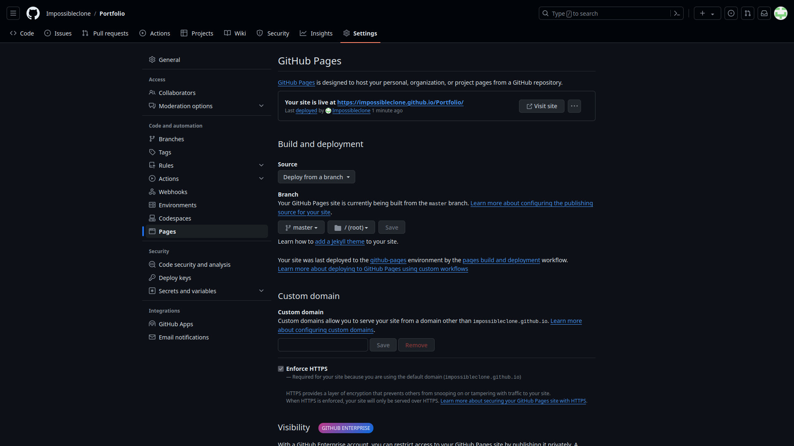

Web Development
My Fab Lab journey started with the exciting world of web development! Diving into the fundamentals of HTML, CSS, and perhaps even Javascript, I learned how to build the building blocks of websites. This first module provided a strong foundation for understanding how the web works and sparked my creativity for crafting online experiences.
My Fab Lab adventure began with a thrilling immersion into the world of web development. The very first day wasn't just about theory; we plunged headfirst into the practical world of HTML, the coding language that forms the foundation of web pages. We learned about HTML tags, those special instructions wrapped in angle brackets that act like a secret language for browsers. These tags tell the browser exactly how to display the content we create, bringing our web pages to life. It was fascinating to discover the power of basic tags like 'p', which transforms plain text into a well-defined paragraph. We explored the hierarchy of headings, from the bold and prominent 'h1' all the way down to the more subtle 'h6', understanding how they structure and organize website content. Adding pizazz with images became a reality as we learned about the 'img' tag, a gateway to incorporating visuals into our web creations. This first day at Fab Lab wasn't just about memorizing tags; it was about igniting a passion for crafting the building blocks of the web. We started to see the potential to transform our ideas into interactive online experiences. It was an empowering introduction, laying the groundwork for our web development journey and whetting our appetites for the exciting tools and techniques that awaited us in the days to come.
Day 1: The Time Table
This first day at Fab Lab wasn't just about memorizing tags; it was about igniting a passion for crafting the building blocks of the web. We started to see the potential to transform our ideas into interactive online experiences. To solidify our understanding of HTML, we embarked on a practical project – recreating our very own college timetable!
The task was both challenging and rewarding. We learned to structure our timetable using HTML tables, defined by the 'table' and '/table' tags. Each day of the week became a table row 'tr', further divided into individual class periods using table cells '/td'. Filling these cells with our course names and timings brought the familiar structure of our college schedule to life online.
It was a fantastic hands-on experience that showcased the power of HTML to organize and present information in a clear and visually appealing way. Recreating our timetable wasn't just about replicating a physical object; it was about understanding the fundamental building blocks of web pages. This first day laid the groundwork for our web development journey, and we eagerly awaited the exciting tools and techniques that awaited us in the days to come.
Day 2: Our Profile
...and the excitement continued! Day two at Fab Lab saw us putting our newfound HTML skills to a very personal use – crafting our own profile pages! This was more than just coding; it was a chance to showcase ourselves online with a touch of creativity.
We learned how to incorporate images using the 'img' tag, allowing us to add a personal touch with a photograph. The power of HTML tags like 'p' and various heading tags 'h1'to 'h6' came into play as we crafted our introductions and shared a bit about ourselves. It was a fun exercise in using HTML to structure our thoughts and tell our stories.
Building a profile page wasn't just about the technical aspects; it was about exploring self-expression through code. We learned how to present ourselves online in a way that reflected our personalities and interests. This hands-on project solidified our understanding of HTML and gave us a glimpse into the possibilities of crafting engaging online experiences. With each passing day, Fab Lab was proving to be an incredible journey, equipping us with the skills and confidence to build our presence on the web.
Day 3: CSS Exploration
...and the learning curve continued to climb on day three at Fab Lab! We transitioned from the world of HTML, the foundation of web pages, to the realm of CSS, the language that controls their appearance. This was where things got visually exciting!
CSS allowed us to style our creations, and our focus for the day was none other than buttons – those ever-important elements that drive user interaction. We learned about properties like background-color, border, and even text-shadow, letting us personalize the look and feel of our buttons.
But day three wasn't just about aesthetics; it was about adding a touch of pizzazz with animations and transitions. We explored the power of CSS animations, where buttons could morph, pulsate, or even slide into view on hover. Transitions, on the other hand, allowed us to control the smoothness of these effects, creating a seamless and visually appealing user experience.
By the end of the day, our static HTML buttons had transformed into dynamic and interactive elements. We were no longer just building websites; we were breathing life into them, making them not just functional but also engaging and delightful to use. This foray into CSS ignited a passion for visual storytelling, and we couldn't wait to see what other design possibilities awaited us in the coming days at Fab Lab.
Day 4:World Of Javascript
...Day three at Fab Lab marked a significant leap forward! We ventured beyond the realm of HTML and CSS, entering the exciting world of JavaScript – the language that adds interactivity and dynamism to web pages. This was where things truly started to come alive!
We began by exploring the fundamentals of JavaScript, learning how to write code that could manipulate elements on a webpage. We even delved into the concept of inline JavaScript, where code snippets are embedded directly within HTML tags, allowing us to add a touch of interactivity without the need for separate files.
With these newfound skills, we embarked on a captivating project – creating a webpage that displayed the time in different countries! This involved utilizing JavaScript's built-in Date object and functions like getHours(), getMinutes(), and getSeconds() to retrieve the current time. But the real magic happened when we learned how to leverage JavaScript's ability to dynamically update elements on the page.
Imagine a webpage showcasing clocks for various cities around the globe. By incorporating JavaScript, we could ensure these clocks constantly displayed the current time in each location. We explored ways to format the time data for each location, potentially even adding features like automatic time zone adjustments.
This project wasn't just about displaying time; it was about witnessing the power of JavaScript in action. We saw how code could breathe life into our creations, making them interactive and responsive. The possibilities for building dynamic and user-driven web experiences suddenly seemed endless. Leaving day three at Fab Lab, we were brimming with excitement, eager to delve deeper into the world of JavaScript and explore its potential in shaping our web development journey.
Day5:Navigating through Git & Github
Git Setup:
Get Equipped:
1] Install Git on your system. It helps track your project's history.
(Optional) Create a free GitHub account. This lets you collaborate and store project history online.
2] Initialize Your Project:
Open your terminal and navigate to your project directory.
Run git init. This creates a hidden folder (.git) to manage version control within your project.
3] Track Your Changes:
As you edit project files, Git doesn't automatically track them.
Use git add
Use git add . to add all modified files in your working directory.
4] Commit Your Snapshots:
Run git commit with a clear message describing your changes.
This creates a "commit," a permanent record of your project's state at that time.
Think of it like saving milestones in your project's evolution.
5] (Optional) Connect Remotely:
If you use GitHub, create a new project (repository) there.
Run git remote add origin
Use git push origin
Day four at Fab Lab introduced us to the world behind the scenes – the essential tools for managing and sharing our web creations. This was the day we delved into the world of Git and GitHub, the power couple that keeps web development organized and collaborative.
Git, the version control system, became our secret weapon for tracking changes to our code. Imagine working on your webpage, making tweaks and improvements over time. Git meticulously keeps a record of these changes, allowing you to revert to previous versions if needed, or compare different stages of your development. It's like having a time machine for your code!
But Git's true strength lies in its collaboration capabilities. This is where GitHub steps in. As a hosting platform for Git repositories, GitHub allows us to share our code with others, work together on projects seamlessly, and showcase our creations to the world.
On day four, we learned the fundamentals of using Git commands to initialize repositories, commit changes, and push our code to GitHub. We explored features like branching, which allows for creating isolated development environments where you can experiment without affecting the main project. GitHub's user interface also made collaboration a breeze, enabling us to see each other's contributions, review changes, and merge them together effortlessly.
With these newfound skills, the concept of hosting our websites became a reality. We could now publish our creations online, making them accessible to anyone with an internet connection. This opened up a whole new world of possibilities, from sharing our projects with friends and family to potentially building a portfolio for future endeavors.
Day four at Fab Lab wasn't just about technical skills; it was about understanding the power of collaboration and the importance of version control in the world of web development. We were now equipped with the tools to not only build websites but also manage them effectively and share them with the world.
Day 6:Creating Our Portfolio
On the sixth day of a focused development sprint, we achieved a significant milestone: the completion of our portfolio. This culmination represents the successful execution of a strategic plan, meticulous content gathering, and thoughtful design choices. While the official launch may occur at a later date, the satisfaction of having a comprehensive portfolio ready to showcase our work is a testament to our dedication and collaborative efforts.
Day 7:Hosting the page
The development sprint reached its exciting conclusion on Day 7 with the successful launch of my portfolio website on GitHub Pages! This milestone marks the culmination of [briefly mention the initial development stage, e.g., meticulous planning and design] that began a week ago.
While the website itself is a testament to the hard work invested, the deployment on GitHub Pages ensures its accessibility and allows me to readily share my work with the world.